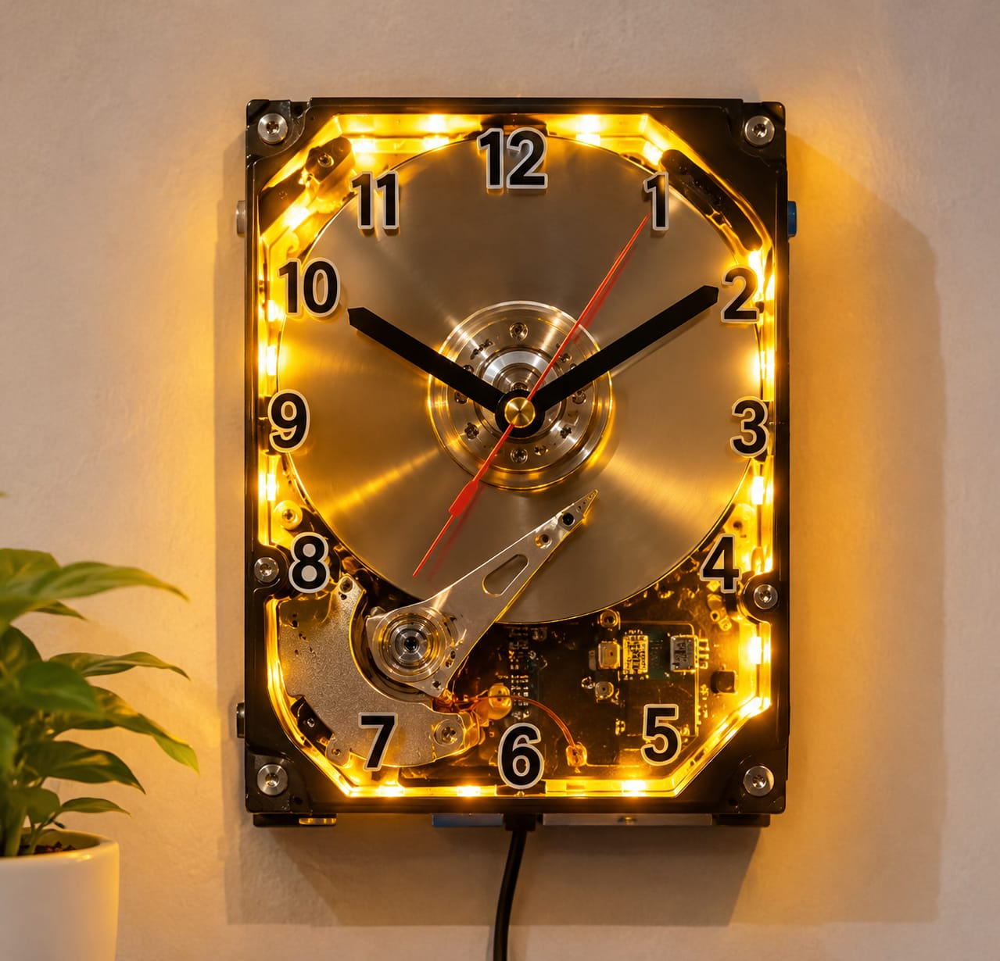

Jam Estetik Dari Hard Disk Bekas

Ulasan Produk: Jam dinding dari harddisk bekas merupakan kreasi daur ulang yang menggabungkan kembali piringan harddisk, rangka casing harddisk, dan mesin jam analog menjadi sebuah jam dinding fungsional yang unik dan bernilai seni. Dilengkapi dengan angka jam yang jelas dan jarum jam yang presisi, produk ini tidak hanya berfungsi sebagai penunjuk waktu di meja kerja atau dinding, tetapi juga memiliki nilai estetika bergaya teknologi dan modern. Selain menghemat biaya, proyek ini menjadi solusi efektif dalam mengurangi limbah elektronik komputer yang sulit terurai.
- Alat dan Bahan
- Alat
- Obeng set presisi
- Tang kecil
- Gunting
- Bahan
- Lem tembak (3 buah)
- 1 Unit Hard Disk bekas (1 buah)
- 1 Set mesin jam analog (1 set)
- Keyboard angka (12 angka)
- Baterai AA (1 buah)
- Lampu LED strip (1 buah)
- Alat
- Langkah kerja
- Bongkar Hard Disk: Buka casing penutup atas HDD menggunakan obeng Torx presisi hingga piringan (platter) terlihat.
- Pembersihan: Bersihkan permukaan piringan menggunakan kain mikrofiber dan alkohol agar mengilap.
- Pemasangan Angka: Pasang stiker angka 1-12 di sekeliling permukaan piringan HDD dengan rapi.
- Pemasangan Mesin Jam:
- Lepaskan poros tengah spindel HDD jika memungkinkan, atau pasang mesin jam tepat di poros pusat dari belakang.
- Rekatkan mesin jam pada bagian belakang casing HDD menggunakan lem epoxy/lem tembak.
- Pemasangan Jarum Jam: Pasang jarum jam, menit, detik pada poros mesin jam dari bagian depan piringan.
- Finishing & Pengujian: Pasang baterai, pastikan jarum berputar tanpa tersangkut actuator arm. Pasang LED strip di sekeliling.
- Estimasi Biaya
Biaya Alat
No Nama Alat Harga 1 Obeng set presisi Rp10.000 2 Tang kecil Rp8.000 3 Gunting Rp5.000 Total biaya alat Rp23.000 Biaya Bahan
No Nama Bahan Harga 1 Hard Disk bekas Rp20.000 2 Mesin jam analog Rp15.000 3 Lem tembak Rp10.000 4 LED strip Rp15.000 Total biaya bahan Rp60.000 Kesimpulan Biaya
Total Biaya Produksi Rp83.000 Harga Jual Rp120.000 Keuntungan Rp37.000